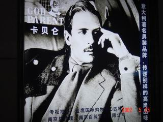
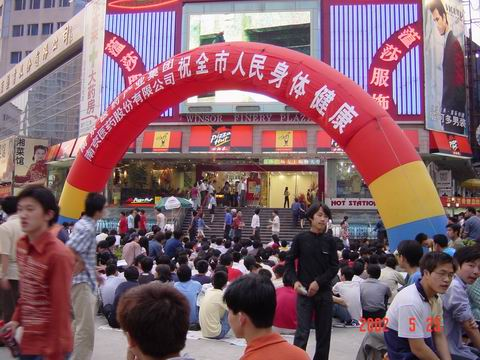
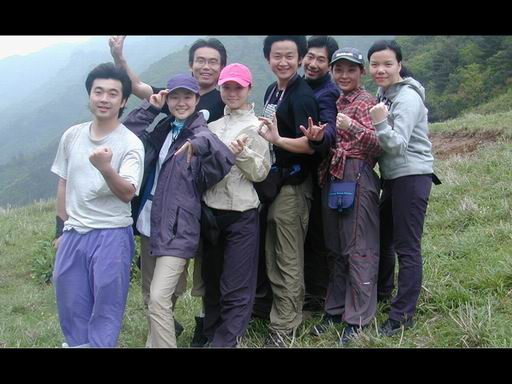
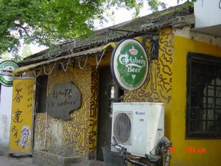

我喜欢的SHOP @ May 31, 2002
——这是我经常喜欢逛的商店，只要路过就可能走进去看看。有时候可能是被商店的摆设和氛围所吸引。

——这是我经常喜欢逛的商店，只要路过就可能走进去看看。有时候可能是被商店的摆设和氛围所吸引。
——2002年5月25日，下午在五台山看晚球赛，走到新街口地下过道时，一个灯箱广告画很吸引我。一看是意大利品牌的男装广告，意大利品牌的商品越来越多的出现在中国市场。

——同样是傍晚，乐富来那个大的显示屏下面聚集了很多看球赛的人群，那天是中国队VS葡萄牙队。

今天发现自己的文章上了西祠的胡同口，虚荣心有点满足哦！文章名为《谁和父母同住》。
在TIGER CAFE上我们有3篇讨论关于同性恋话题的文章，一篇英文两篇中文的。非常有趣的话题，并且发现一些访问者是从http://www.littleyellowdifferent.com/上连接过来的，那里是同性恋群体经常活动的一个个人网页。
同性恋在中国是被鉴定为精神病患者的范畴。作为生活在中国的我来讲，第一次知道“同性恋”这个名词是我16、17岁的时候，别人告诉我某女人和某女人是同性恋。事实上我对这样一个群体也存在着好奇心理。我刚刚工作的时候在我姨妈家附近有个“星期五酒吧”，据说是同性恋聚集的地方，不过也有人传说是“鸭子”聚集的场所。不去论70年代之后出生的人,中国人还是含蓄、保守的，含蓄到周围的人很难察觉得到谁是同性恋，当然我得承认我的视线因为过于简单的生活而略显狭隘。
去年也就是2001年4月20日出版的《中国精神障碍分类与诊断标准》第三版中，同性恋不再被统划为病态。在中国大陆称“同性恋”为“同志”。曾有过同性恋行为的人，城市已婚居民中占0.5%，农村已婚居民中占2.3%，在大学生中占7.5%。近年来，中国有男女同性恋者3600万人到4800万人，男同性恋者居多。虽然同性恋在人群中所占的比例仍属少数，但是绝对数量巨大，对大多数人来说，同性恋仍是一个神秘的群体。
我的男同事去杭州的工厂出差，工厂厂长的儿子在国际贵族学校上学，很巧厂长儿子的语文老师也在：一个矮且敦实的 年轻男子。晚上厂长将我的男同事和这位语文老师安排在同一家酒店不同的房间住宿。晚上语文老师敲门，说自己房间的空调不运作了，要求共同使用我的男同事的房间。同事便答应了。
半夜的时候，语文老师上了我的男同事的床，并且小鸟依人般的欲与我的同事缠绵，男同事不依，谁知语文老师会擒拿格斗，按住同事手上的穴位，使得他动弹不得。我的男同事只好软硬兼施，苦苦等到天亮，终于夺门而逃！回到南京之后，语文老师还打过电话给我的男同事，吓得他报名参加了拳击训练班。
我想同性恋在中国已经不是什么很新鲜的事物，随着近几年的媒体宣传，中国人对同性恋的态度越来越宽容和客观。中国同性恋被摘掉“精神病”的帽子是社会的进步，同性恋能否得到更多的法律保护？同性恋婚姻能否在中国出现？恐怕还需要一段时间。
——耶！我们这里面有人在练“紫阳神功”哦？！好象是我后面的那个....兰花指还挺标准的，嘻嘻！
NICK,SHERRY,JIAJIALING,CHRISTINA,HANK,MARINE,FENGJIE AND STELLA

——中国劳动人民和小日本鬼子的一次友好合影。
GAFFER & NICK

心沉到骨盆，想念盲目的快乐。我常说女友BESS“傻乐”，想着如果可以傻乐也是很幸福的，不是吗？
—曾经我有过美丽的笑容在15岁到25岁之间；
—曾经在1997年，我烫了齐腰的长发；
—曾经被人纯粹的爱着；
—曾经纯粹的去爱；
—曾经崇拜军人，并追随着自己的梦想好多年；
—曾经掉到河里，差点儿被淹死，当时我想“大难不死必有后福”；
—曾经养过一只黄色的大猫，偷偷和它睡一个被窝；
—曾经勇猛无比的追求自己的爱情；
—曾经想过自杀；
—曾经在某个街角停留，因为是那么熟悉的街角；
—曾经失眠并怀疑自己得了神经衰弱；
—曾经居住在不同的城市里；
—曾经因为听见第一次打雷的声音而害怕，那时刚随母亲搬迁到南方；
—曾经不知道“枪炮与玫瑰”是个组合还是一首歌；
—曾经在所谓的艺术圈子里，无病呻吟；
—曾经的快乐也失去了明亮的色泽；
—曾经每个月的零花钱为2元；
—曾经在小学三年级被母亲狠狠的打了一顿；
—曾经无忧无虑的生活在农村两年；
—曾经滚烫的唇，如今已变冷；
—曾经相爱过的人，现在有的只是冷漠；
—曾经伴随着使人透不过气的“关注”长大；
—曾经捉迷藏躲到别人家的米桶里；
—曾经吻我的人，现在娶了别人；
—曾经的纪念日成了银行存折上的密码；
—曾经对我吟唱动人歌曲的歌喉，现在在对谁唱；
—曾经温柔看着我的眼神，现在给了谁？
......
曾经交代了一切，曾经也掩盖了一切，曾经让我明白，曾经也让我恋恋不舍。曾经让端着的咖啡变冷...
从他，一个高高瘦瘦，戴着黑框眼镜的平凡大学生，原本只是自制的一卷demo带，竟无心插柳成为台湾有史以来无法估算最大发片量的地下唱片，靠的是学生网络族群的烧录；从他可以由2001年的开春正式唱片发行到2001年6月推出第三张唱片，累积的唱片销售量突破二十二万张，无疑颠覆流行音乐的传统窠究，因为无论中文饶舌被误为数来宝或者向来西方音乐不为东方再造的错误认知，直到MC HotDog的出现，中文饶舌已然投给台湾音乐市场最大冲击。
这个周末我在听MC HOTDOG的歌曲，是朋友自己刻录的光盘，并且从网上下载打印的歌词。多少有点异样的感觉，就好象拿着什么黄色小说的手抄本一样。起初，坐在我后面办公的老兄，有一次很神秘的问我是否听过MC HOTDOG的音乐，我说没有。于是他让我听了一两首MC HOTDOG的歌曲，从他那里我得到对MC HOTDOG的一些启蒙教育。后来五一节旅行期间，我想和同行的JIAJIALING交换音乐听，看他很犹豫的表情更刺激我一定要知道他的MD里面有些什么不可告人的东西。原来是MC HOTDOG的歌曲，JIAJIALING认为给我听这个不太好。...仔细听他的歌曲还是在这个周末，听得我心惊肉跳，那是不同于我的另一种生活。在轻松讽刺风格底下，是坦白诚实的自省，写出自己的心声。
中文Hip Hop饶舌会蔚为一种流行，带领这股风潮的会是MC HotDog。MC HotDog在客观上已经成为台湾Hip Hop音乐的代表，他是整个台湾饶舌乐的开创者。相较之下，诸多歌手与大众媒体等之间的互动频繁，MC HotDog的MV不但因为“饶舌本质 ─ 真实的创作语言”而遭禁播，且在饶舌尚未登入台湾主流音乐市场之际更是鲜少有媒体曝光。但是历经一年来，他在各大校园或Pub等地的现场表演总是人山人海，即便从来不听Hip Hop的人也都开始从他的歌入门。MC HotDog刚出唱片时曾经在访问中半开玩笑的说，母校辅大的同学都只知道蔡依林却不认识他。不过一年不到，MC HotDog已经拥有广泛的知名度了。
周六的上午我都在用我那个去年新买的音响听MC HOTDOG的音乐，记得那句“就让我来RAP….”以及那句“我的生活放荡...”，当然还有很多歌词写得绝顶的尖锐和刻薄。当听到《韩流来袭》里面那句不断重复的骂人的话时，我真担心我父母会听见。听他的歌曲的时候，我感觉我和他一样的甩，一样过瘾的去唱，甚至他富有节奏感的音乐让我刷牙的时候腿也不能闲着。在他的音乐面前我还需要掩饰什么呢？
网络上介绍《男生女生 呸》这首歌探讨的是现代爱情观，他写这首歌的想法是想狠狠干谯一下通俗情歌创造出来的虚拟美好世界，一如往常歌词还是非常MC HotDog式的风格，一针见血的指出“有人认为死缠烂打就能一辈子，可是对方只想干十五分钟一下子”，看完他的歌词真叫人哭笑不得，但是又能直击内心深处某个记忆或是常听到的说法，也许爱情真的没那么美好，至少听完MC HotDog的歌我们可以笑一笑。

昨天是三伏天的最后一天，刚刚学了美语里“三伏天”的单词，在家看《Sword Fish》，片子开头部分听到主人公说“dog day”这个单词，现在对三伏天的这个单词应该是不会忘了的。所以今天异常的凉爽，不冷也不热。刚巧今天又是外婆去世42天，家人早早起床，不知道在忙些什么，或许是我并不想知道他们在忙些什么吧。骑了自行车没有计划性的外出了，如果不出去转转真的很对不起这么凉爽的天气，另外一个原因也是心情使然。不知不觉得就骑到那所经常散步的校园。
寥寥无几的行人，高大茂密的梧桐树将这条校园的主干道装饰的很幽静，唯一嘈杂的是穿堂而过的秋风。我骑车路过那些宿舍区到达操场。所幸的是操场上也同样的萧条和冷清，它没有我想象得那么大，虽然我曾经不止一次的穿越和行走在上面，并且它承载着我不为人知的心情。我将车停靠下来，翻身坐在路边的水泥护栏上，面向操场，身后是一排整齐的松柏树，松柏的枝叶覆盖在我头顶一米左右的距离。这里不会有人经常路过，因为路的尽头交通不方便或可以说是死胡同吧。所以我喜欢选择坐在这里，这里很安静，安静只可以聆听自己心跳的声音。操场上长满绿草，非常葱翠的颜色，并没有因为秋的到来而黯然失色，这是一个很不错的足球场地，南北向都有两个球门，茂盛的草地在学生返校之后必会衰弱下去。我享受这情景代给我的心情，坐在这平日里那些浮躁的情绪会渐渐沉静下来。莫名的感动起来，一种温热的液体漫溢在眼眶中。
没有原因！
现在是午夜1：40分，我睡意全无。
晚上和GRACE去南大听刘家琨的讲座，他是个建筑师，1984年毕业之后仅做了一个工程的设计就开始过自由的生活：写作。直到1990年才又回到他的本行中来。用他的话讲，做自己的专业，越专业越好，如果可以从自己的专业中跳出来，到其他行当转转，这样可以从不同的角度更好的去理解和诠释自己的专业设计。

听完老刘GG的演讲从正对南大正门的教学楼出来，和GRACE步行到南大生活区，突然在今夜，对这座校园有了很多的感觉和感情。虽然前男友JOHN是从这里毕业的，可我从未对他的母校有诸多深刻的印象，想必是那时太迟钝的缘故吧？！

——路边新做的指示牌。哦，“强化部”在东大楼。JOHN后来念的是物理理论专业，听说物理专业的学生最聪明。原来那时侯的我是自作聪明啊？！
我对南大的印象之一：他的妹妹当时还在南大的外语系念书，有一次她在路边的过道上拴了一张网，和她的同学打羽毛球来着，我和她哥哥骑车路过时，满脸是汗的她穿着一件红得耀眼的汗衫远远的朝我们挥手；
印象之二：生活区南门旁边的网球场。刚工作那会儿，JOHN和我经常在这里打网球，我们一起到新华书店买指导初学者如何打网球的书。每每路过那个网球场，几年前那些晴朗的下午，我们和同事在网球场上打网球的情景马上从记忆中跳出来，清晰可见；
印象之三：那会儿，JOHN才工作第二年，经常回南大和他上研究生的同学一起聊天一起玩。他告诉我他们强化班40个学生，当时就只有5个人在国内或工作或上学，其余都出国深造了。那时侯我认为南大的学生好厉害！同时因为他，我对理工科出生的人很有好感也很有安全感。

——南大运动场
出了生活区是广州路，夜市上的小商品摊子零星的占据着人行道的边缘。上次来这里是四月一个星期六的下午，漫天飘着梧桐树上的小毛毛，有点风也有点热。我在广州路上的一家小店里挑音乐碟，一个朋友正好打电话给我，假惺惺的嘘寒问暖一番，当时我真想跑过去看看他装模作样的表情。
走着走着，看见街对面的“川香元食府”，恩，那也可以算做我对南大的印象之一吧！96年，JOHN带我来吃这家的四川小吃，那时的川香元食府猥琐的缩在广州路肯得基快餐店那个路口的东面位置上，外面搭了一个简易破旧的棚子，屋内几张油呼呼的桌子、凳子。好象店名不叫现在这个名字，叫“赖汤圆”什么的。那时侯我还不能吃辣，所以吃的时候，脸一直红嘴唇发麻，搞得我在他面前更加窘迫。（据说能吃辣的人可以做一家之长。）JOHN告诉我，他和他的同学都喜欢这家店的口味。1998年我开始频繁支持“赖汤圆”在金鹰购物中心美食广场的餐饮事业。不仅因为我喜欢上四川菜的口味，另一个原因是用餐的同时，顺便看看“赖汤圆”那个赏心悦目的年轻老板。他经常一个人坐在客人用餐的座位上，看看报纸或者用他单眼皮的眼睛酷酷的看着来来往往的客人。后来再没有见到他，听说他的老婆生孩子他回家去了。
... ...
我尽量放慢脚步好延迟离开南大的时间和距离......

——留学生宿舍

“答案”酒吧曾经有个男歌手，剪着整齐的刘海，后面扎了个独辫子，很清瘦的模样。听说当时他在攒钱准备做变性手术。有一次我去那里“醉生梦死”，果真看见他隆起的胸部，并且是非常彻底的女性化打扮，我马上狠狠地想象：如果...如果...要是...怎么办？再之后去“答案”一直没有再见到“她”！